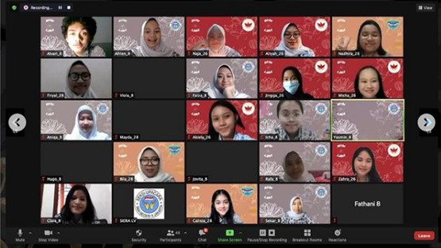
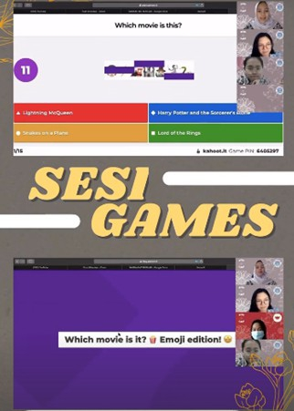

Liputan : Saling Menimba Ilmu di Budi-Lara 2021
Oleh : Khalisa Hana

sumber foto : instagram.com/siera8jkt/
Budi-Lara atau Bulan Studi dan Latihan Upacara adalah program kerja baru dari Ekstrakurikuler Siera angkatan 55 di tahun 2021 ini. Budi-Lara bertujuan sebagai ajang diskusi terarah untuk mendapat solusi dari program-program kepaskibraan selama masa pandemi. Budi-Lara telah dilaksanakan pada Sabtu, 30 Januari 2021 kemarin. Tahun ini, Budi-Lara menjadi wadah diskusi antara Ekstrakurikuler Siera bersama Ekstrakurikuler Paskibra dari SMA Negeri 26 Jakarta dan SMA Negeri 28 Jakarta.
Fathani selaku ketua pelaksana Budi-Lara 2021 menuturkan bahwa program kerja ini dilaksanakan atas dasar permasalahan yang dihadapi oleh esktrakurikuler kepaskibraan sebagai ekstrakurikuler fisik di masa pandemi. "Latar belakang diadakannya Budi-Lara karena paskibra itu identik dengan kegiatan fisik seperti baris-berbaris dan segala aktivitas yang melibatkan berkumpul di luar ruangan. Nah, kondisi pandemi ini menjadi tantangan bagi Siera angkatan 55 atau Ekstrakurikuler Paskibra SMA Negeri 8 Jakarta untuk tetap menjalankan berbagai lomba, kegiatan, program kerja, serta program kaderisasi secara daring. Tetapi, keadaan seperti ini pastinya dihadapi oleh seluruh Ekstrakurikuler Paskibra, tidak hanya Siera 55 saja. Oleh karena itu, Budi-Lara (Bulan Studi dan Latihan Upacara) dirancang sebagai wadah bagi beberapa ekstrakurikuler paskibra antarsekolah untuk berdiskusi dan juga sharing tentang bagaimana cara mempertahankan eksistensi kami sebagai paskibra dalam masa pandemi ini." ucap Fathani.
Tantangan yang paling terasa menurut Fathani adalah saat masa-masa mengundang Ekstrakurikuler Paskibra dari sekolah lain untuk bergabung dalam program kerja ini. Selain itu, perubahan jadwal penilaian harian yang mengharuskan Budi-Lara terlaksana di tengah masa-masa ujian pun juga menjadi tantangan bagi terlaksananya program kerja Budi-Lara ini. Namun, Siera 55 mampu mengatasi segala hambatan dan mampu membawa Budi-Lara terselenggara dengan sukses.
Menurut Fathani, momen yang paling berkesan adalah saat acara sudah selesai terlaksana. Semua peserta dapat berbincang satu sama lain juga mengisi kuisioner dengan menyenangkan. "Alhamdulillah semua peserta merasa diskusinya sangat bermanfaat dan esensi dari Budi-Lara ini dapat sangat dirasakan oleh semua peserta. Selain diskusi, kami juga banyak bertukar cerita mengenai keluh kesah dan lain-lain. Hal lain yang membuat berkesan yakni banyaknya harapan agar Budi-Lara bisa terus dilaksanakan di tahun mendatang." tutur ketua pelaksana Budi-Lara 2021.
Harapan Fathani untuk kedepannya dari Budi-Lara 2021 adalah agar program kerja ini nantinya dapat dilaksanakan secara luring dengan topik yang lebih bervariatif bersama lebih banyak rekan-rekan Ekstrakurikuler Paskibra dari sekolah lain untuk bisa menjadi wadah diskusi yang bermanfaat secara luas sekaligus wadah untuk membangun dan memperkuat relasi dengan Ekstrakurikuler Paskibra lainnya.

sumber foto : instagram.com/siera8jkt/
Setelah berbincang seru dengan ketua pelaksana Budi-Lara 2021, kami juga mewawancarai beberapa peserta Budi-Lara, loh! Banyak dari mereka yang memberikan komentar positif dan apresiasi terhadap Budi-Lara 2021.
"Jujur lagi pandemi gini semua ekstrakurikuler paskibra pasti bingung mau gimana karena kita kegiatannya berbasis lapangan, tapi dengan adanya Budi-Lara, kita bisa bertukar materi bareng SMA Negeri 8 Jakarta dan SMA Negeri 26 Jakarta, bertukar tata cara pelatihan bahkan instagram, lho! Banyak banget manfaat yang aku dapat dari kegiatan ini, aku jadi lebih punya banyak teman sama melihat banyak sudut pandang dari banyak orang yang berbeda. Meskipun hanya daring, menurut aku esensi secara keseluruhan dari acara ini tersampaikan, sampai ketemu di lain kegiatan! Semoga kedepannya 8 sama 28 bisa bersahabat terus yaa, sukses terus xoxo!" ujar Nadhira selaku partisipan dari SMA Negeri 28 Jakarta.
"Bagian paling seru di Budi-Lara itu di bagian diskusi, apalagi pas lagi diskusiin angkatan 2023 yang kondisinya kurang lebih sama dengan kondisi angkatan 2023 di SMA Negeri 26 Jakarta, relatable banget sih." ujar Kanesha, salah satu perwakilan dari Ekstrakurikuler Paskibra SMA Negeri 26 Jakarta.
"Di bagian diskusi kita sama-sama bahas banyak hal mulai dari on topic sampai yang di luar topik, seru banget! Pembahasan kegiatan kepaskibraan mulai dari upacara, organisasi, sampai lomba. Cerita-cerita soal susah senang di paskibra dan banyak pembahasan lainnya yang seru-seru. Menyenangkan banget bisa ketemu sama kenalan baru yang punya topik pembahasan yang mirip dan banyak pelajaran juga referensi yang sepertinya dapat diaplikasikan ke program kerja kami kedepannya. Games-nya juga seru dan niat banget, sih! Keren parah, Budi-Lara 2021!" ucap salah satu partisipan Budi-Lara 2021 dari SMA Negeri 26 Jakarta yang tidak ingin disebutkan namanya.
Demikian wawancara singkat kami bersama Fathani selaku ketua pelaksana Budi-Lara 2021 juga beberapa partisipan Budi-Lara 2021. Bagaimana, seru kan program kerja Budi-Lara kemarin? Di tahun 2021 ini masih banyak lagi lho program kerja baru dari berbagai ekstrakurikuler di SMA Negeri 8 Jakarta yang pastinya menarik dan seru. Oleh karena itu, nantikan artikel liputan kami selanjutnya! Stay safe dan sampai jumpa, Pendaki Bukit Duri!